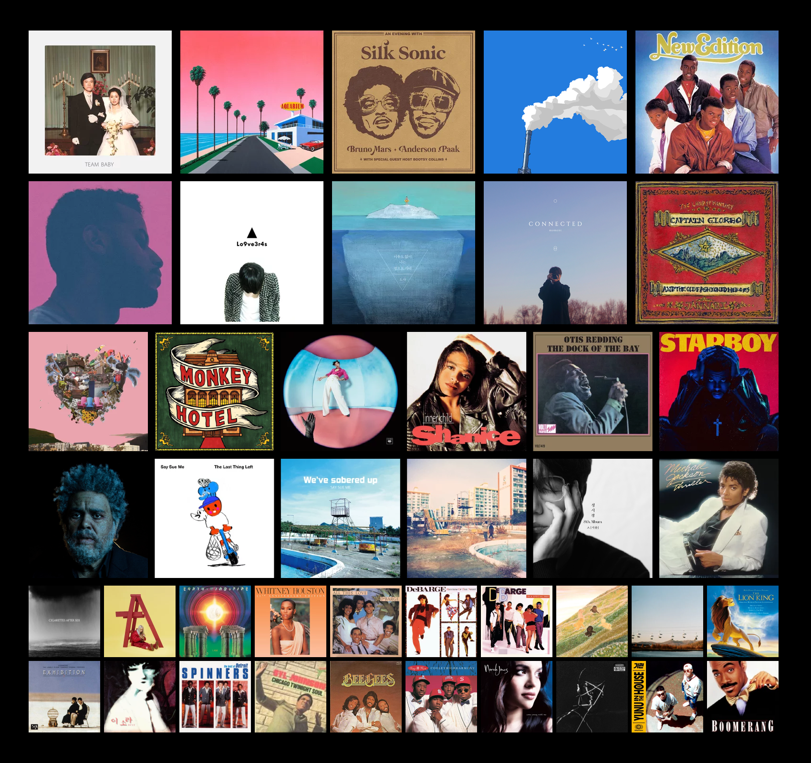

안녕하세요? 자기 소개를 해볼까 합니다
취미생활
누구에게나 취미생활이 있잖아요?
저는 고등학교 시절, 우연히 들었던 한 장의 음반을 계기로 음악의 매력에 푹 빠지게 되었고,
그때부터 본격적으로 음반을 모으기 시작했습니다.
시간이 날 때마다 음반 가게를 찾아다니고, 온라인으로 희귀 앨범을 찾아보며
조금씩 제 컬렉션을 늘려왔습니다.
지금까지 수많은 음반들과 함께하며 음악이 제 삶의 중요한 일부가 되었습니다.
이 웹페이지는 제가 오랜 시간에 걸쳐 모은 음반들을 소개하고,
각 앨범에 얽힌 이야기와 감상을 나누기 위해 만든 공간입니다.
단순히 수집한 리스트를 보여주는 것에 그치지 않고,
음악이 제게 어떤 의미였는지, 어떤 순간에 어떤 음악을 들었는지를 함께 나누고 싶었습니다.
제가 좋아하는 음악 장르는 인디, 재즈, 록 등 비교적 자유롭고 감성적인 음악들이 많습니다.
때로는 커버 아트에 반해서 음반을 고르기도 하고,
어느 날은 우연히 들은 한 곡에 이끌려 새로운 아티스트의 세계에 빠지기도 합니다.
장르나 시대를 가리지 않고, 마음을 움직이는 음악이라면
어떤 것이든 제 컬렉션에 들어올 수 있어요.
음악은 저에게 단순한 취미를 넘어,
감정을 담아내고 추억을 떠올리게 해주는 소중한 기록입니다.
이 페이지가 음악을 사랑하는 여러분과 취향을 공유하고,
서로의 음악 이야기를 나눌 수 있는 따뜻한 공간이 되기를 바랍니다.
혹시 비슷한 음악을 좋아하시거나, 추천하고 싶은 앨범이 있다면
언제든지 메일로 편하게 이야기 걸어주세요.
여러분의 음악 이야기도 들려주시면 정말 기쁠 것 같아요.
